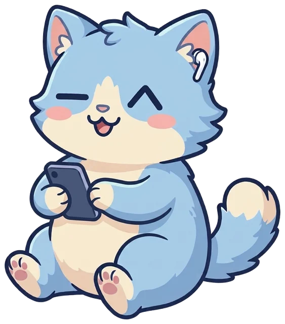
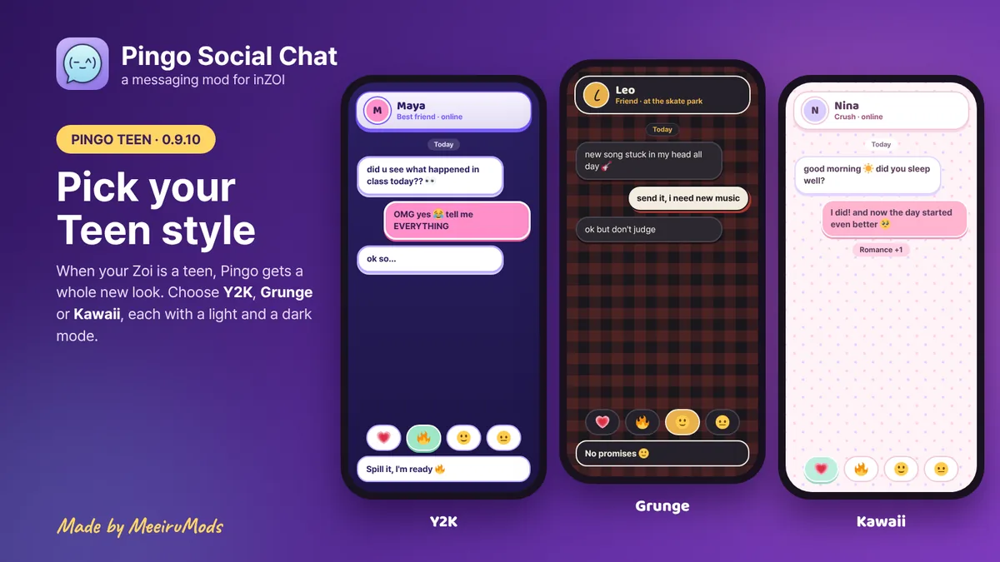
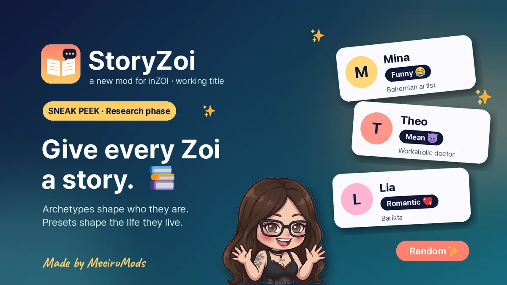
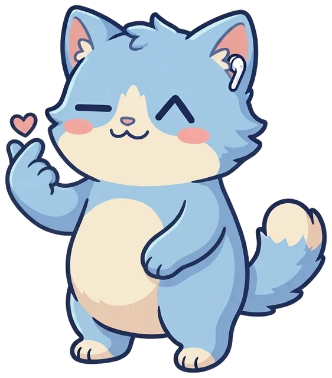

I make story-driven mods for inZOI, with lots of love and way too many text messages. Grab a mod, join the community and say hi!Eu faço mods de inZOI focados em histórias, com muito carinho e mensagens demais. Baixe um mod, entre na comunidade e venha dar um oi!Hago mods de inZOI centrados en historias, con mucho cariño y demasiados mensajes de texto. ¡Descarga un mod, únete a la comunidad y saluda!Je crée des mods inZOI centrés sur les histoires, avec beaucoup d'amour et beaucoup trop de messages. Téléchargez un mod, rejoignez la communauté et venez dire coucou !

A messaging app for your Zois' phone. Everyone your Zoi knows is already in the contacts, no need to add anyone. They text you on their own, and every reply you pick changes your relationship and your Zoi's mood. No AI in your game: every message was written in advance, so nothing is generated while you play.Um app de mensagens no celular das suas Zois. Todo mundo que a sua Zoi conhece já está nos contatos, sem precisar adicionar ninguém. Eles mandam mensagem sozinhos, e cada resposta que você escolhe muda a relação e o humor da sua Zoi. Sem IA no seu jogo: todas as mensagens foram escritas antes, nada é gerado enquanto você joga.Una app de mensajes para el móvil de tus Zois. Todas las personas que tu Zoi conoce ya están en los contactos, sin tener que añadir a nadie. Te escriben por su cuenta, y cada respuesta que eliges cambia la relación y el ánimo de tu Zoi. Sin IA en tu juego: todos los mensajes se escribieron antes, así que nada se genera mientras juegas.Une appli de messagerie pour le téléphone de vos Zois. Toutes les personnes que votre Zoi connaît sont déjà dans les contacts, pas besoin d'ajouter qui que ce soit. Elles vous écrivent d'elles-mêmes, et chaque réponse que vous choisissez change la relation et l'humeur de votre Zoi. Pas d'IA dans votre jeu : chaque message a été écrit à l'avance, rien n'est généré pendant que vous jouez.

I'm cooking up new ideas and collabs with other modders. Peek at the roadmap, or join the Discord to see previews first!Tenho ideias novas e collabs com outros modders no forno. Espie o roadmap ou entre no Discord para ver as prévias primeiro!Tengo ideas nuevas y collabs con otros modders en el horno. Echa un vistazo al roadmap o únete al Discord para ver los avances primero.Je prépare de nouvelles idées et des collabs avec d'autres moddeurs. Jetez un œil à la feuille de route, ou rejoignez le Discord pour voir les aperçus en premier !
What I'm working on and what comes next. Plans can change along the way.No que estou trabalhando e o que vem depois. Os planos podem mudar no caminho.En qué estoy trabajando y qué viene después. Los planes pueden cambiar por el camino.Ce sur quoi je travaille et ce qui arrive ensuite. Les plans peuvent changer en cours de route.

A new mod to give every Zoi a story. Archetypes shape who they are, and presets shape the life they live. Pick one or go random. It works with Pingo from day one. Research phase.Um mod novo para dar uma história a cada Zoi. Os arquétipos definem quem elas são, e os presets, a vida que levam. Escolha um ou deixe aleatório. Funciona com o Pingo desde o começo. Fase de pesquisa.Un mod nuevo para darle una historia a cada Zoi. Los arquetipos definen quiénes son, y los presets, la vida que llevan. Elige uno o déjalo al azar. Funciona con Pingo desde el primer día. Fase de investigación.Un nouveau mod pour donner une histoire à chaque Zoi. Les archétypes définissent qui ils sont, et les presets, la vie qu'ils mènent. Choisissez-en un ou laissez faire le hasard. Compatible avec Pingo dès le premier jour. Phase de recherche.
Add-ons made together with other modders: The Grapevine (SoftLatte), tipsy texts with Soft Life by B.M. (Mindy), and gang gossip with Organized Crime (ZoiWorks), after Pingo 1.0.Addons feitos junto com outros modders: The Grapevine (SoftLatte), mensagens de bêbado com o Soft Life by B.M. (Mindy) e fofocas de gangue com o Organized Crime (ZoiWorks), depois do Pingo 1.0.Add-ons hechos junto con otros modders: The Grapevine (SoftLatte), mensajes de borrachera con Soft Life by B.M. (Mindy) y chismes de pandillas con Organized Crime (ZoiWorks), después de Pingo 1.0.Des add-ons créés avec d'autres moddeurs : The Grapevine (SoftLatte), des textos éméchés avec Soft Life by B.M. (Mindy), et des potins de gangs avec Organized Crime (ZoiWorks), après Pingo 1.0.
Spicier late-night chats for adult Zois. For the full experience, use it with SceneZOI and VelvetZoi; it also works without them, just with less to do. A separate add-on, only on Nexus and Patreon.Conversas mais quentes de madrugada para Zois adultas. Para a experiência completa, use com o SceneZOI e o VelvetZoi; funciona sem eles também, só que com menos coisas. Um addon separado, só no Nexus e no Patreon.Chats más picantes de madrugada para Zois adultas. Para la experiencia completa, úsalo con SceneZOI y VelvetZoi; también funciona sin ellos, solo que con menos cosas. Un add-on aparte, solo en Nexus y Patreon.Des discussions nocturnes plus épicées pour les Zois adultes. Pour l'expérience complète, utilisez-le avec SceneZOI et VelvetZoi ; il fonctionne aussi sans eux, avec moins de choses. Un add-on séparé, uniquement sur Nexus et Patreon.
Step-by-step guides to get the most out of Pingo. Pick a topic:Guias passo a passo para aproveitar o Pingo ao máximo. Escolha um assunto:Guías paso a paso para sacarle el máximo partido a Pingo. Elige un tema:Des guides pas à pas pour profiter de Pingo à fond. Choisissez un sujet :
The basics of Pingo for young adults and older: chats, replies, relationships and the little things that change how people treat you.O básico do Pingo para jovens adultos para cima: conversas, respostas, relações e os detalhes que mudam como as pessoas te tratam.Lo básico de Pingo para adultos jóvenes en adelante: chats, respuestas, relaciones y los detalles que cambian cómo te tratan.Les bases de Pingo pour les jeunes adultes et plus : discussions, réponses, relations et les petits détails qui changent la façon dont on vous traite.
Click the floating bubble (press F9 to show or hide it) or tap the Pingo icon on your Zoi's phone.Clique na bolinha flutuante (aperte F9 para mostrar ou esconder) ou toque no ícone do Pingo no celular da sua Zoi.Haz clic en la burbuja flotante (pulsa F9 para mostrarla u ocultarla) o toca el icono de Pingo en el móvil de tu Zoi.Cliquez sur la bulle flottante (F9 pour l'afficher ou la cacher) ou touchez l'icône Pingo sur le téléphone de votre Zoi.
People your Zoi knows show up in Contacts on their own. You can give them a nickname, a custom photo, mute, hide or block them.As pessoas que a sua Zoi conhece aparecem sozinhas nos Contatos. Você pode dar apelido, trocar a foto, silenciar, esconder ou bloquear.Las personas que tu Zoi conoce aparecen solas en Contactos. Puedes ponerles un apodo, cambiar la foto, silenciarlas, ocultarlas o bloquearlas.Les personnes que votre Zoi connaît apparaissent toutes seules dans les Contacts. Vous pouvez leur donner un surnom, changer la photo, les mettre en sourdine, les cacher ou les bloquer.
Contacts write on their own during the day, based on how close you are. Pick a reply tone (Sweet, Excited, Chill or Dry) and tap Another line until you like it.Os contatos escrevem sozinhos ao longo do dia, de acordo com o quanto vocês são próximos. Escolha o tom (Carinhoso, Animado, De boa ou Seco) e toque em Outra frase até gostar.Los contactos escriben solos durante el día, según lo cercanos que sean. Elige un tono (Cariñoso, Emocionado, Tranquilo o Seco) y toca Otra frase hasta que te guste.Les contacts écrivent d'eux-mêmes dans la journée, selon votre proximité. Choisissez un ton (Tendre, Enthousiaste, Cool ou Sec) et touchez Autre phrase jusqu'à ce qu'elle vous plaise.
Each reply changes friendship, romance or family points in the game, and can give your Zoi a mood. The closer you are, the more a bad reply hurts.Cada resposta muda os pontos de amizade, romance ou família no jogo e pode dar um humor à sua Zoi. Quanto mais próximos, mais uma resposta ruim machuca.Cada respuesta cambia los puntos de amistad, romance o familia en el juego y puede darle un ánimo a tu Zoi. Cuanto más cercanos, más duele una mala respuesta.Chaque réponse change les points d'amitié, de romance ou de famille dans le jeu, et peut donner une humeur à votre Zoi. Plus vous êtes proches, plus une mauvaise réponse fait mal.
Open a contact and tap Start a chat: photo, hang out, gossip, hobbies, romance, Chat, Vent or Between you two.Abra um contato e toque em Puxar assunto: foto, rolê, fofoca, hobbies, romance, Conversar, Desabafar ou Entre vocês.Abre un contacto y toca Iniciar conversación: foto, quedada, chismes, hobbies, romance, Charlar, Desahogarse o Entre ustedes.Ouvrez un contact et touchez Lancer la conversation : photo, sortie, potins, hobbies, romance, Discuter, Vider son sac ou Entre vous.
Contacts call you, send real gifts to your Zoi's bag with a handwritten note, and post Moments you can react to. You can call and post too.Os contatos te ligam, mandam presentes de verdade para a bolsa da sua Zoi com um bilhete e postam Momentos para você reagir. Você também pode ligar e postar.Los contactos te llaman, mandan regalos reales a la bolsa de tu Zoi con una nota y publican Momentos para que reacciones. Tú también puedes llamar y publicar.Les contacts vous appellent, envoient de vrais cadeaux dans le sac de votre Zoi avec un mot, et publient des Moments auxquels réagir. Vous pouvez aussi appeler et publier.
Plans made in Pingo become real events in the game: the plan goes to the calendar and the other Zoi really shows up.Os rolês combinados no Pingo viram eventos de verdade no jogo: o plano vai para a agenda e a outra Zoi aparece mesmo.Los planes hechos en Pingo se vuelven eventos reales en el juego: el plan va al calendario y la otra Zoi aparece de verdad.Les plans faits dans Pingo deviennent de vrais événements dans le jeu : le plan va dans le calendrier et l'autre Zoi vient vraiment.
In a chat, tap Start a chat → Hang out. Or, face to face, use the Pingo option in the social menu to ask them out right there.Numa conversa, toque em Puxar assunto → Rolê. Ou, pessoalmente, use a opção do Pingo no menu social para chamar a pessoa na hora.En un chat, toca Iniciar conversación → Quedada. O, en persona, usa la opción de Pingo en el menú social para invitarle ahí mismo.Dans une discussion, touchez Lancer la conversation → Sortie. Ou, en personne, utilisez l'option Pingo du menu social pour l'inviter sur-le-champ.
Coffee, park, beach, movies, dinner, night out, arcade, bowling, home visits, sleepovers and more. Choose now or later.Café, parque, praia, cinema, jantar, balada, fliperama, boliche, visita em casa, festa do pijama e mais. Escolha agora ou mais tarde.Café, parque, playa, cine, cena, noche de fiesta, recreativos, bolos, visitas a casa, pijamadas y más. Elige ahora o más tarde.Café, parc, plage, cinéma, dîner, soirée, salle d'arcade, bowling, visite à la maison, soirée pyjama et plus. Choisissez maintenant ou plus tard.
They say yes or no based on your relationship, their mood and their schedule. If they're busy or asleep, they'll tell you.A pessoa aceita ou recusa de acordo com a relação, o humor e a agenda dela. Se estiver ocupada ou dormindo, ela avisa.Acepta o rechaza según su relación, su ánimo y su agenda. Si está ocupada o dormida, te lo dirá.Il accepte ou refuse selon votre relation, son humeur et son emploi du temps. S'il est occupé ou endormi, il vous le dira.
Accepted plans appear in the game calendar and in Pingo's Plans tab. At the time, the other Zoi comes, and the actions are in the event panel.O rolê aceito aparece na agenda do jogo e na aba Planos do Pingo. Na hora, a outra Zoi vem, e as ações ficam no painel do evento.Los planes aceptados aparecen en el calendario del juego y en la pestaña Planes de Pingo. A la hora, la otra Zoi llega y las acciones están en el panel del evento.Les plans acceptés apparaissent dans le calendrier du jeu et dans l'onglet Plans de Pingo. À l'heure dite, l'autre Zoi arrive, et les actions sont dans le panneau de l'événement.
Cancel from the Plans tab in Pingo. Just know that canceling on someone can hurt a little.Cancele pela aba Planos no Pingo. Só saiba que desmarcar com alguém pode magoar um pouco.Cancela desde la pestaña Planes de Pingo. Eso sí, cancelarle a alguien puede doler un poco.Annulez depuis l'onglet Plans de Pingo. Sachez juste qu'annuler peut vexer un peu.
The texts follow how it really went in the game (great, okay or bad). Friends may ask how it was, and you can tell them, or make someone jealous.As mensagens seguem como foi de verdade no jogo (ótimo, morno ou ruim). Os amigos podem perguntar como foi, e você pode contar, ou causar ciúme em alguém.Los mensajes siguen cómo fue de verdad en el juego (genial, normal o mal). Tus amigos pueden preguntar cómo fue y puedes contarlo, o poner celoso a alguien.Les messages suivent comment ça s'est vraiment passé dans le jeu (super, bof ou mal). Vos amis peuvent demander comment c'était, et vous pouvez raconter, ou rendre quelqu'un jaloux.
The game doesn't let mods open files from your PC, so Pingo uses photos from internet links. Here's how to get a link that works.O jogo não deixa mods abrirem arquivos do seu PC, então o Pingo usa fotos por link da internet. Veja como pegar um link que funciona.El juego no deja que los mods abran archivos de tu PC, así que Pingo usa fotos con enlaces de internet. Así consigues un enlace que funcione.Le jeu ne permet pas aux mods d'ouvrir des fichiers de votre PC, donc Pingo utilise des photos par lien internet. Voici comment obtenir un lien qui marche.
Use the game's photo mode or a screenshot. Any image works: your Zoi, a place, food, a pet…Use o modo foto do jogo ou um print. Qualquer imagem serve: sua Zoi, um lugar, comida, um bichinho…Usa el modo foto del juego o una captura. Sirve cualquier imagen: tu Zoi, un lugar, comida, una mascota…Utilisez le mode photo du jeu ou une capture d'écran. N'importe quelle image : votre Zoi, un lieu, un plat, un animal…
Upload it to Imgur, ImgBB or Catbox. Don't use Discord: its links stop working after about 24 hours.Suba no Imgur, no ImgBB ou no Catbox. Não use o Discord: os links dele param de funcionar em cerca de 24 horas.Súbela a Imgur, ImgBB o Catbox. No uses Discord: sus enlaces dejan de funcionar en unas 24 horas.Mettez-la sur Imgur, ImgBB ou Catbox. N'utilisez pas Discord : ses liens cessent de fonctionner au bout d'environ 24 heures.
You need the link of the image itself, usually ending in .jpg or .png. On Imgur, right-click the image → Copy image address. On ImgBB, choose Direct links. Catbox gives it right away.Você precisa do link da própria imagem, que costuma terminar em .jpg ou .png. No Imgur, clique com o botão direito na imagem → Copiar endereço da imagem. No ImgBB, escolha Links diretos. O Catbox já entrega o link.Necesitas el enlace de la imagen en sí, que suele terminar en .jpg o .png. En Imgur, clic derecho en la imagen → Copiar dirección de la imagen. En ImgBB, elige Enlaces directos. Catbox te lo da al momento.Il vous faut le lien de l'image elle-même, qui finit souvent par .jpg ou .png. Sur Imgur, clic droit sur l'image → Copier l'adresse de l'image. Sur ImgBB, choisissez Liens directs. Catbox le donne tout de suite.
Paste the link where you want the photo (see below) and save. If the picture appears, it worked!Cole o link onde você quer a foto (veja abaixo) e salve. Se a imagem aparecer, deu certo!Pega el enlace donde quieras la foto (mira abajo) y guarda. Si aparece la imagen, ¡funcionó!Collez le lien là où vous voulez la photo (voir ci-dessous) et enregistrez. Si l'image s'affiche, c'est gagné !
Coming for everyone in 0.9.10. When your Zoi is a teen, Pingo turns into Pingo Teen on its own, with chats written for teens.Chega para todos na 0.9.10. Quando a sua Zoi é adolescente, o Pingo vira o Pingo Teen sozinho, com conversas escritas para teens.Llega para todos en la 0.9.10. Cuando tu Zoi es adolescente, Pingo se convierte solo en Pingo Teen, con chats escritos para teens.Arrive pour tous dans la 0.9.10. Quand votre Zoi est ado, Pingo devient tout seul Pingo Teen, avec des discussions écrites pour les ados.
No setting needed: a teen Zoi gets Pingo Teen, and when they grow into a young adult, Pingo switches back to the normal version.Não precisa configurar: uma Zoi adolescente ganha o Pingo Teen e, quando vira jovem adulta, o Pingo volta para a versão normal.No hace falta configurar nada: una Zoi adolescente tiene Pingo Teen y, cuando se hace adulta joven, Pingo vuelve a la versión normal.Aucun réglage : un Zoi ado a Pingo Teen, et quand il devient jeune adulte, Pingo repasse à la version normale.
Contacts are other teens and your family. Adults outside the family never text a teen.Os contatos são outros teens e a sua família. Adultos de fora da família nunca mandam mensagem para um teen.Los contactos son otros teens y tu familia. Los adultos de fuera de la familia nunca escriben a un teen.Les contacts sont d'autres ados et votre famille. Les adultes hors famille n'écrivent jamais à un ado.
Crush and Sweetheart, always sweet: no flirting, no late nights, no exes or partner types. On the Relationship screen you can pick your sweetheart's style.Crush e Namorico, sempre fofo: sem flerte, sem madrugada, sem ex nem tipos de namorado. Na tela de Relação você escolhe o jeito do namorico.Crush y Noviecito/a, siempre tierno: sin coqueteo, sin madrugadas, sin ex ni tipos de pareja. En la pantalla de Relación eliges el estilo de tu noviecito/a.Crush et Amoureux, toujours mignon : pas de flirt, pas de nuits blanches, pas d'ex ni de types de partenaire. Sur l'écran Relation, vous choisissez le style de votre amoureux.
Parents text about your weekly grade, warnings and curfew. Each dry reply to them adds a grounding point; with 2 points (or an F, or being rude during a scolding) you're grounded: no phone for 1 in-game day, and messages pile up.Os pais mandam mensagem sobre a nota da semana, advertências e o horário de voltar. Cada resposta seca para eles dá um ponto de castigo; com 2 pontos (ou nota F, ou responder mal numa bronca) vem o castigo: sem celular por 1 dia do jogo, e as mensagens acumulam.Los padres escriben sobre la nota de la semana, las advertencias y la hora de volver. Cada respuesta seca les suma un punto de castigo; con 2 puntos (o una F, o contestar mal en una bronca) te castigan: sin móvil 1 día del juego, y los mensajes se acumulan.Les parents écrivent pour la note de la semaine, les avertissements et l'heure de rentrer. Chaque réponse sèche donne un point de punition ; à 2 points (ou un F, ou une insolence pendant un sermon), vous êtes privé de téléphone pendant 1 jour de jeu, et les messages s'accumulent.
During class, friends slip you notes. Write back or send your own. Just don't get caught: the teacher may read it out loud or give you a warning.Durante a aula, os amigos te passam bilhetes. Responda ou mande o seu. Só cuidado com o professor: ele pode ler em voz alta ou te dar uma advertência.Durante la clase, tus amigos te pasan notitas. Contesta o manda la tuya. Que no te pillen: el profe puede leerla en voz alta o ponerte una advertencia.Pendant le cours, vos amis vous passent des mots. Répondez ou envoyez le vôtre. Mais ne vous faites pas prendre : le prof peut le lire à voix haute ou vous donner un avertissement.
Three themes just for teens: Y2K, Grunge and Kawaii, each with a light and a dark mode.Três temas só para teens: Y2K, Grunge e Kawaii, cada um com modo claro e escuro.Tres temas solo para teens: Y2K, Grunge y Kawaii, cada uno con modo claro y oscuro.Trois thèmes rien que pour les ados : Y2K, Grunge et Kawaii, chacun en clair et en sombre.
Got a question? Tap it and the Pingo cat answers. 🐾Ficou com dúvida? Toque na pergunta e o gatinho do Pingo responde. 🐾¿Tienes una duda? Tócala y el gatito de Pingo responde. 🐾Une question ? Touchez-la et le chat de Pingo vous répond. 🐾
PingoUse the CurseForge app, or unzip the manual download into Documents\inZOI\Mods. Never use both at the same time: two copies of Pingo will break each other.Use o app do CurseForge ou descompacte o download manual em Documents\inZOI\Mods. Nunca use os dois juntos: duas cópias do Pingo atrapalham uma à outra.Usa la app de CurseForge o descomprime la descarga manual en Documents\inZOI\Mods. Nunca uses las dos a la vez: dos copias de Pingo se estropean entre sí.Utilisez l'appli CurseForge, ou décompressez le téléchargement manuel dans Documents\inZOI\Mods. N'utilisez jamais les deux en même temps : deux copies de Pingo se gênent l'une l'autre.
PingoTap the Pingo icon on your Zoi's phone, or press F9.Toque no ícone do Pingo no celular da sua Zoi ou aperte F9.Toca el icono de Pingo en el móvil de tu Zoi o pulsa F9.Touchez l'icône Pingo sur le téléphone de votre Zoi, ou appuyez sur F9.
PingoPingo follows your game's language. You can pick another one in Pingo's Settings. Lines that aren't translated yet show in English.O Pingo segue o idioma do jogo. Você pode escolher outro nas Configurações do Pingo. O que ainda não foi traduzido aparece em inglês.Pingo sigue el idioma de tu juego. Puedes elegir otro en los Ajustes de Pingo. Lo que aún no está traducido aparece en inglés.Pingo suit la langue de votre jeu. Vous pouvez en choisir une autre dans les Paramètres de Pingo. Ce qui n'est pas encore traduit s'affiche en anglais.
PingoNot while you play: Pingo never generates anything in your game, and every message was written in advance. Behind the scenes, I do use AI as a helper: to write the code, to translate, and to brainstorm and polish lines. The ideas, the stories and the final say are always mine.Não enquanto você joga: o Pingo não gera nada no seu jogo, e toda mensagem foi escrita antes. Nos bastidores, eu uso IA como ajudante: para escrever o código, traduzir e ter ideias e lapidar as falas. As ideias, as histórias e a palavra final são sempre minhas.No mientras juegas: Pingo nunca genera nada en tu juego, y cada mensaje se escribió antes. Entre bastidores, sí uso la IA como ayudante: para escribir el código, traducir y tener ideas y pulir las frases. Las ideas, las historias y la última palabra siempre son mías.Pas pendant que vous jouez : Pingo ne génère jamais rien dans votre jeu, et chaque message a été écrit à l'avance. En coulisses, j'utilise l'IA comme assistante : pour écrire le code, traduire, trouver des idées et peaufiner les répliques. Les idées, les histoires et le dernier mot sont toujours les miens.
PingoIn Pingo's Settings, tap "Save log" and wait about 15 seconds. Close the game and send the files shown there in the Discord bug channel, with a short description.Nas Configurações do Pingo, toque em "Salvar registro" e espere uns 15 segundos. Feche o jogo e mande os arquivos indicados no canal de bugs do Discord, com uma descrição curta.En los Ajustes de Pingo, toca "Guardar registro" y espera unos 15 segundos. Cierra el juego y manda los archivos que aparecen ahí en el canal de bugs del Discord, con una descripción corta.Dans les Paramètres de Pingo, touchez « Enregistrer le journal » et attendez environ 15 secondes. Fermez le jeu et envoyez les fichiers indiqués dans le salon des bugs du Discord, avec une courte description.
PingoYes. Pingo has collabs with The Grapevine, and reads Family Life and High School Life to react to what happens in your game.Sim. O Pingo tem collab com o The Grapevine e lê o Family Life e o High School Life para reagir ao que acontece no seu jogo.Sí. Pingo tiene collab con The Grapevine y lee Family Life y High School Life para reaccionar a lo que pasa en tu juego.Oui. Pingo a une collab avec The Grapevine, et lit Family Life et High School Life pour réagir à ce qui se passe dans votre jeu.
Come hang out with us! 💜Vem ficar com a gente! 💜¡Ven a pasar el rato con nosotros! 💜Venez traîner avec nous ! 💜
